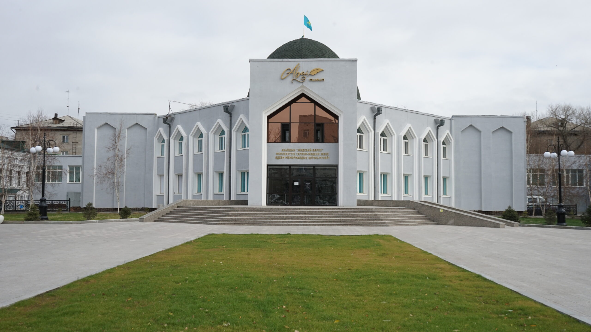

Semey city
Centre of Abai oblast

Semey (Kazakh: Семей, Semei, سەمەي; Cyrillic: Семей), until 2007 known as Semipalatinsk (Russian: Семипала́тинск) and in 1917–1920 as Alash-qala (Kazakh: Алаш-қала, Alaş-qala), is a city in eastern Kazakhstan, in the Kazakh part of Siberia. When Abai Region was created in 2022, Semey became its administrative centre
Some facts
Population: 340 000 (2022)
Founded: 1718
Area: 210 km^2
Famous residents
- Abay Qunanbayuli, father of modern Kazakh poetry, received his Russian schooling at Semey.
-
Fyodor Dostoyevsky, writer, was a political exile here for five years (1854–1859), serving in the military as a corporal in the Seventh Line Battalion at the Semipalatinsk garrison. Residents say that details of some descriptive passages in Dostoyevsky's subsequent books, including his highly acclaimed The Brothers Karamazov, are recognizable as taken from his time in Semey.
- Pavel Bazhov, writer, was a member of the Party Committee of the province of Semipalatinsk from 1920 to 1923.
-
ZaQ (Dulat Bolatuly Muhametkali), singer and a member of the famous Kazakh boyband, Ninety One, was born here in 1996.